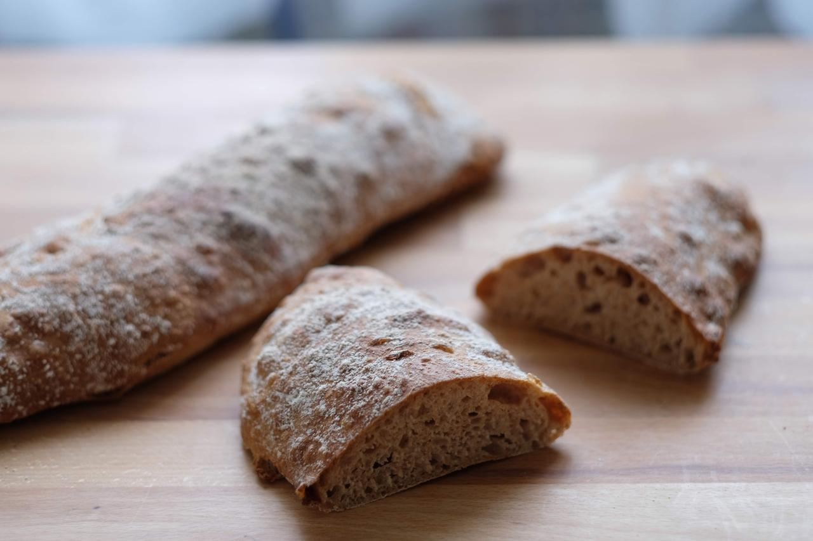
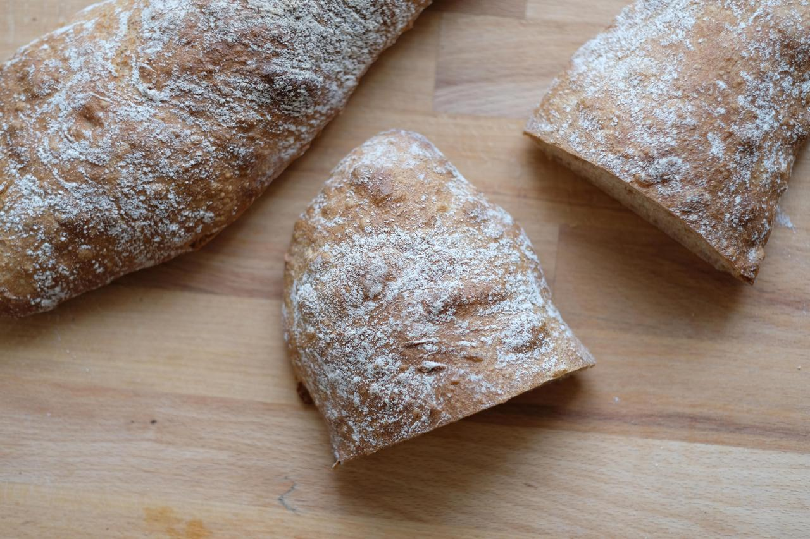

Gesunde Rezepte für Sauerteigbrot und Weiteres
Wenn es mal schnell gehen muss, bereite ich gerne dieses magische Baguette zu. Der Teig muss nur gemischt und nicht geknetet werden, wird trotzdem locker und luftig. Wenn man möchte, kann man diesen Teig auch über Nacht im Kühlschrank gehen lassen. Dieses Rezept eignet sich auch gut, um alten Saueteig zu verwerten. Dieser kann einfach mit zum Teig gemischt werden.

Alle Zutaten mit einem Rührlöffel gut mischen, bis kein Mehl mehr sichtbar ist. Der Teig ist sehr weich und kann nicht geknetet werden. Bei Raumtemperatur 2-3 Stunden (oder im Kühlschrank 8-16 Stunden) gehen lassen. Der Teig sollte sich etwa im Volumen verdoppelt haben. Optional kann der währenddessen zweimal gefaltet werden.
30 Minuten vor Ende der Gärzeit den Ofen auf 240°C aufheizen. Wer das vergessen hat, kann den Teig nach der Gehzeit in den Kühlschrank stellen und den Ofen aufheizen. So übergärt der Teig nicht und fällt nicht zusammen.
Mithilfe einer flexiblen Teigkarte vorsichtig, ohne dass allzuviel Luft entweicht, auf die reichlich bemehlte Arbeitsfläche geben die Oberfläche des Teiges ebenfalls bemehlen. Mit einer starren Teigkarte in drei längliche Teile einteilen. Hierzu ein Teil abtrennen und sofort vorsichtig von den beiden Enden in die Hand nehmen und auf ein Backbleck setzen. Bei 240°C 20-25 Minuten backen, bis die Brote goldbraun sind.
